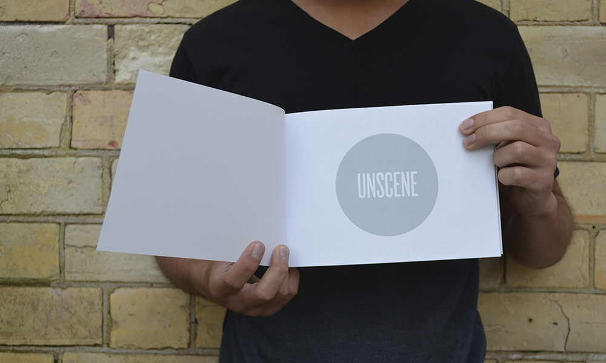
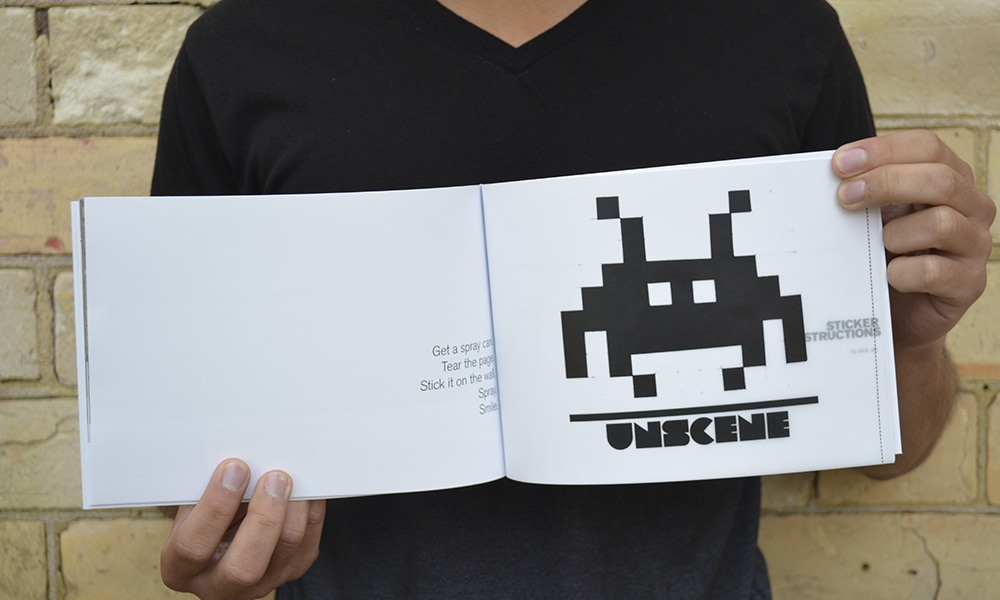
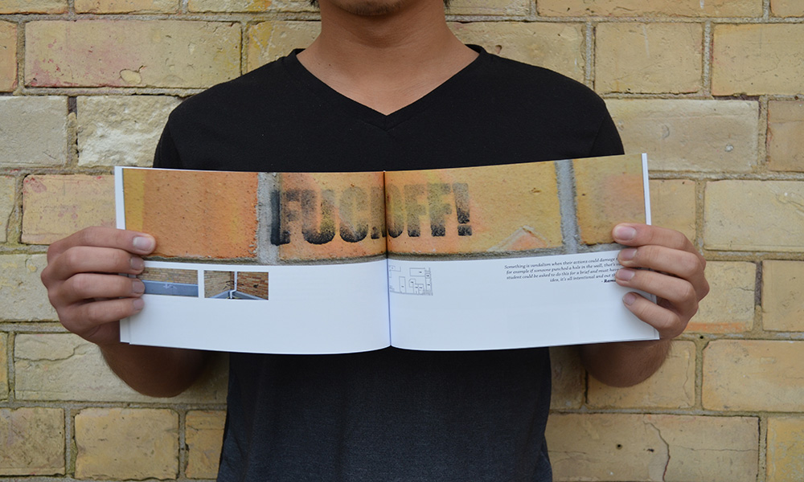
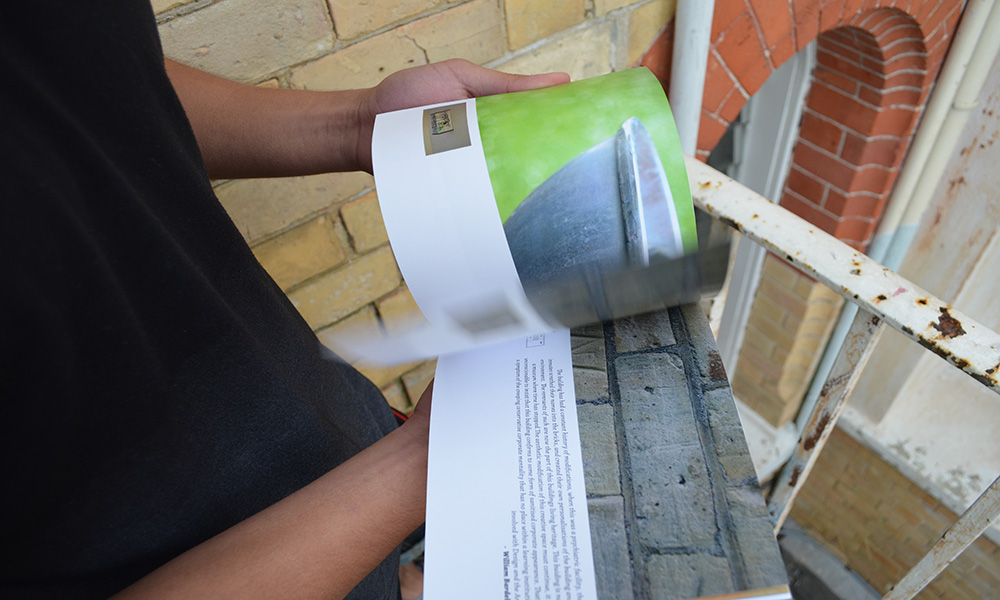
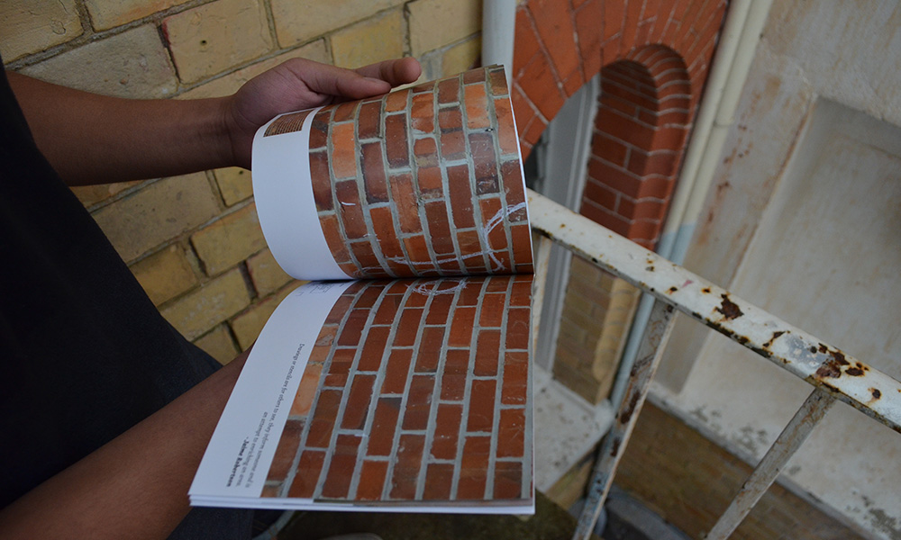
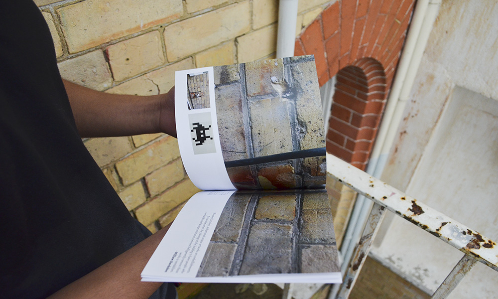

bhavya daiya
- 
- 
- 
- 
- 
- 
unscene
job type:
university assignment
collaterals made:
publication and website
Unscene is about discovering art and discusses our ability to identify art over vandalism on our campus, an ex-asylum. The book also captures are lecturers' opinion on the same. Alongside the book, I also created a website that allowed people to discover these works and write a comment about it. All they had to do was scan the QR code and they're taken to a page where they write their name (if they wanted to) and leave their comment.
The design is heavily influenced by Vince Frost's style. I used the big lettering to enforce the idea of the unseen. The cover and back pages are blank to reflect the freshly painted walls at the start of every year - indicating that the works are hidden underneath.
This project started out as more of an observatory exercise for students that walk through the corridors in Visual Arts building. People need to be aware of their surroundings and learn to find new things. Very much like the idea of research in design, where we are continuously looking and keeping our eyes open for new things.
Why QR codes? Smartphone's capability to scan the codes. They have the puzzle aesthetic that draws attention and also can be tracked. When scanned, these QR codes will count the amount of visits to that specific code and display it to the other people that find it. It’s almost like letting people in on a secret.